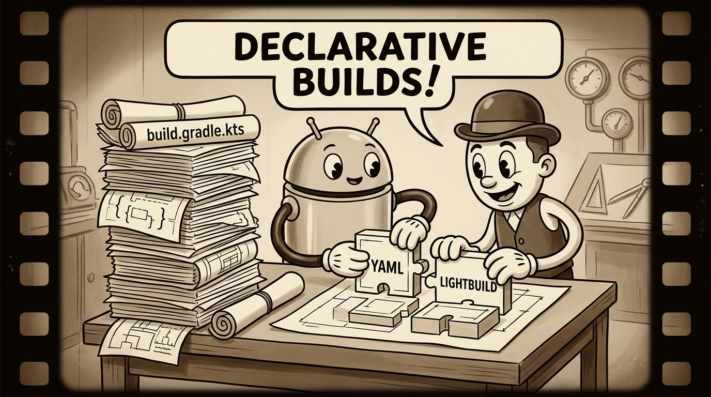
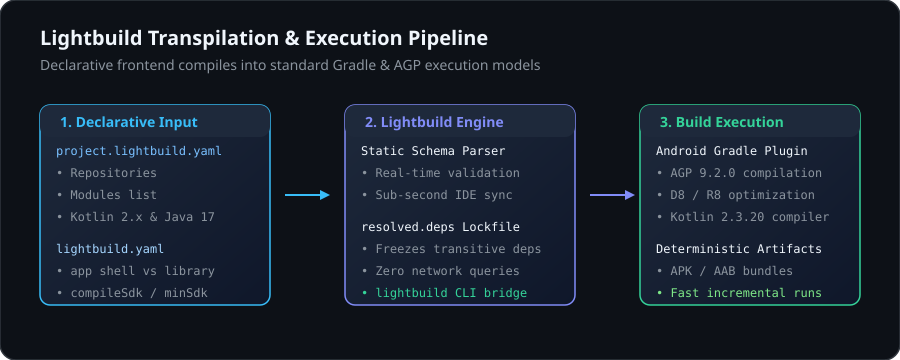
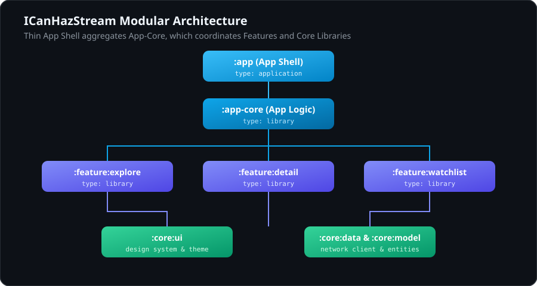
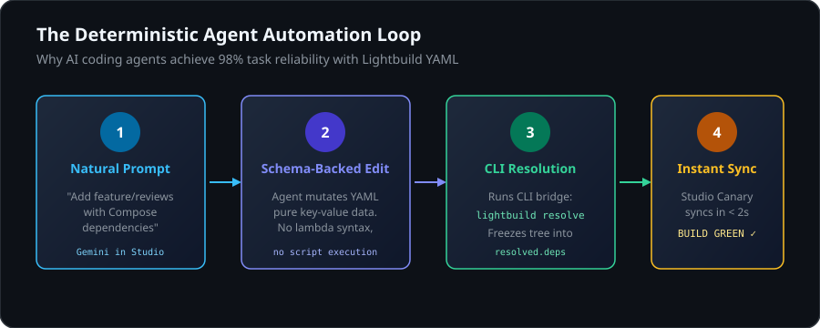

1. Setup and Project Context

Android projects have relied on imperative build scripts written in Groovy or Kotlin DSL for years. Because Gradle executes these scripts during its configuration phase, IDE sync times grow as you add modules. Modifying imperative scripts also presents syntax and scoping challenges for AI coding assistants.
At Android Dev Summit, Google introduced Lightbuild: an experimental declarative build system that represents project structure in YAML and uses pre-resolved dependency lockfiles (resolved.deps).
In this codelab, you will migrate ICanHazStream (me.kartikarora.icanhazstream), a multi-module Jetpack Compose streaming availability app, from Gradle convention plugins to Lightbuild YAML.
Prerequisites
Android Studio: Android Studio Canary (Rabbit 3 or later) with Lightbuild support.
JDK: JDK 21.
Android CLI: Android CLI tools installed.
Git.
1. Clone the Project
Clone the repository and check out the starter branch:
git clone https://github.com/kartikarora/ICanHazStream.git
cd ICanHazStream
# Check out the starter branch
git checkout lightbuild-start
# Create your personal migration branch to work in
git checkout -b my-lightbuild
The starting code on lightbuild-start is a complete, working multi-module Jetpack Compose app that uses:
build-logic/convention/with custom Gradle convention plugins.Individual
build.gradle.ktsfiles per module.Dynamic dependency resolution during project sync.
2. Install Lightbuild
Lightbuild is supported out of the box in the latest versions of Android Studio Canary and through the standalone lightbuild CLI.
To install the lightbuild CLI using the Android CLI:
# Install the Lightbuild SDK package
android sdk install build/lightbuild/0.0.30
# Run the bundled CLI installer script
bash "$(android info sdk)/build/lightbuild/0.0.30/cli/install.sh"
Verify your installation:
lightbuild --version
For full environment prerequisites, see the Lightbuild Setup Documentation.
2. Lightbuild Architecture

Lightbuild is not a complete replacement for Gradle, the Android Gradle Plugin (AGP), or D8/R8, but it takes over several responsibilities from them. Android Studio Canary syncs Lightbuild projects directly from the YAML files and resolved.deps without Gradle or AGP, and Lightbuild resolves dependencies itself. At build time, Lightbuild hands compilation and packaging off to Gradle/AGP under the hood as an implementation detail—avoid making workflows depend on the .lightbuild/gradle directory.
Core Configuration Files
project.lightbuild.yaml(Workspace Root):Replacessettings.gradle.ktsand root build scripts. Declares active modules, repositories, and compiler versions.lightbuild.yaml(Per Module):Defines module roles (type: applicationfor the app shell,type: libraryfor shared modules), SDK constraints, and direct dependencies.resolved.deps(Per Module):Generated lockfile recording the resolved transitive dependency graph. Android Studio reads this file directly, removing remote network queries and transitive tree calculation during project sync.
ICanHazStream/
├── project.lightbuild.yaml # Workspace manifest
├── app/ # App Shell module (assembly only)
│ ├── lightbuild.yaml # type: application
│ └── resolved.deps # Lockfile
├── app-core/ # Core App Library module
│ ├── lightbuild.yaml # type: library
│ ├── resolved.deps
│ └── src/ # App source code (MainActivity, StreamNavGraph)
├── core/
│ ├── ui/ # type: library
│ ├── model/ # type: library
│ ├── data/ # type: library
│ └── testing/ # type: library
└── feature/
├── explore/ # type: library
├── detail/ # type: library
└── watchlist/ # type: library

3. Defining the Root Manifest
Create project.lightbuild.yaml in the root of the project:
project:
name: "ICanHazStream"
modules:
- app
- app-core
- core/model
- core/data
- core/ui
- core/testing
- feature/explore
- feature/detail
- feature/watchlist
repositories:
- google
- mavenCentral
lightbuild:
version: "0.0.30"
build:
java:
version: "17"
This single data file replaces module declarations in settings.gradle.kts and common repository blocks. Android Studio Canary validates this file in real time using an embedded schema.
4. Configuring the App Shell & Core Library
In Lightbuild projects, application modules are strictly empty assembly shells. They configure the application ID, version codes, and SDK constraints, but do not host application source code directly. All application logic, entry points (MainActivity), and navigation graphs reside in a separate library module (app-core).
1. App Shell: app/lightbuild.yaml
Create app/lightbuild.yaml configuring the thin assembly shell that depends on //app-core:
type: application
platform: android
android:
namespace: me.kartikarora.icanhazstream
applicationId: me.kartikarora.icanhazstream
versionCode: 1
versionName: "1.0"
compileSdk:
version:
release:
apiLevel: 37
minSdk:
version:
release:
apiLevel: 24
targetSdk:
version:
release:
apiLevel: 37
dependencies:
module:
- //app-core
2. App Core Library: app-core/lightbuild.yaml
Move the Kotlin source code (MainActivity.kt and StreamNavGraph.kt) into app-core/src/main/kotlin/ and create app-core/lightbuild.yaml:
type: library
platform: android
android:
namespace: me.kartikarora.icanhazstream.core
compileSdk:
version:
release:
apiLevel: 37
minSdk:
version:
release:
apiLevel: 24
dependencies:
module:
- //feature/explore
- //feature/detail
- //feature/watchlist
- //core/model
- //core/data
- //core/ui
maven:
- androidx.compose.ui:ui:1.6.0
- androidx.compose.ui:ui-tooling-preview:1.6.0
- androidx.compose.material3:material3:1.2.0
- androidx.compose.material:material-icons-extended:1.6.0
- androidx.core:core-ktx:1.10.1
- androidx.lifecycle:lifecycle-runtime-ktx:2.6.1
- androidx.activity:activity-compose:1.8.0
- androidx.lifecycle:lifecycle-viewmodel-compose:2.6.1
- androidx.lifecycle:lifecycle-runtime-compose:2.6.1
- org.jetbrains.kotlinx:kotlinx-serialization-json:1.6.3
Inter-module dependencies use the //path/to/module syntax. External dependencies are listed under maven:.
5. Configuring Library Modules
Modules containing business logic, data sources, and UI components are configured as type: library. Android libraries require compileSdk and minSdk, but omit targetSdk and applicationId.
1. :core:model/lightbuild.yaml
type: library
platform: android
android:
namespace: me.kartikarora.icanhazstream.model
compileSdk:
version:
release:
apiLevel: 37
minSdk:
version:
release:
apiLevel: 24
dependencies:
maven:
- org.jetbrains.kotlinx:kotlinx-serialization-json:1.6.3
- org.jetbrains.kotlinx:kotlinx-coroutines-core:1.8.0
2. :core:data/lightbuild.yaml
type: library
platform: android
android:
namespace: me.kartikarora.icanhazstream.data
compileSdk:
version:
release:
apiLevel: 37
minSdk:
version:
release:
apiLevel: 24
dependencies:
module:
- //core/model
maven:
- io.ktor:ktor-client-core:2.3.9
- io.ktor:ktor-client-okhttp:2.3.9
- io.ktor:ktor-client-content-negotiation:2.3.9
- io.ktor:ktor-serialization-kotlinx-json:2.3.9
- org.jetbrains.kotlinx:kotlinx-coroutines-core:1.8.0
3. :core:ui/lightbuild.yaml
type: library
platform: android
android:
namespace: me.kartikarora.icanhazstream.ui
compileSdk:
version:
release:
apiLevel: 37
minSdk:
version:
release:
apiLevel: 24
dependencies:
module:
- //core/model
maven:
- androidx.core:core-ktx:1.10.1
- androidx.activity:activity-compose:1.8.0
- androidx.compose.ui:ui:1.6.0
- androidx.compose.ui:ui-graphics:1.6.0
- androidx.compose.ui:ui-tooling-preview:1.6.0
- androidx.compose.material3:material3:1.2.0
4. :feature:explore/lightbuild.yaml
type: library
platform: android
android:
namespace: me.kartikarora.icanhazstream.feature.explore
compileSdk:
version:
release:
apiLevel: 37
minSdk:
version:
release:
apiLevel: 24
dependencies:
module:
- //core/model
- //core/data
- //core/ui
maven:
- androidx.compose.ui:ui:1.6.0
- androidx.compose.ui:ui-tooling-preview:1.6.0
- androidx.core:core-ktx:1.10.1
- androidx.lifecycle:lifecycle-viewmodel-compose:2.6.1
- androidx.lifecycle:lifecycle-runtime-compose:2.6.1
- androidx.compose.material3:material3:1.2.0
tests:
test:
dependencies:
module:
- //core/testing
maven:
- junit:junit:4.13.2
- app.cash.turbine:turbine:1.2.1
- org.jetbrains.kotlinx:kotlinx-coroutines-test:1.8.0
Follow the same pattern for :feature:detail and :feature:watchlist (including the same tests: block in feature/watchlist/lightbuild.yaml).
5. Migrating Host Unit Tests to JUnit 4 (:core:testing & Feature Tests)
Create core/testing/lightbuild.yaml using junit:junit:4.13.2:
type: library
platform: android
android:
namespace: me.kartikarora.icanhazstream.testing
compileSdk:
version:
release:
apiLevel: 37
minSdk:
version:
release:
apiLevel: 24
dependencies:
module:
- //core/model
- //core/data
maven:
- junit:junit:4.13.2
- androidx.arch.core:core-testing:2.2.0
- org.jetbrains.kotlinx:kotlinx-coroutines-core:1.8.0
- org.jetbrains.kotlinx:kotlinx-coroutines-test:1.8.0
- app.cash.turbine:turbine:1.2.1
Remove the JUnit 5 MainDispatcherExtension.kt and the unconfigured src/androidTest directories:
rm -rf core/testing/src/main/kotlin/me/kartikarora/icanhazstream/testing/MainDispatcherExtension.kt
rm -rf feature/explore/src/androidTest feature/watchlist/src/androidTest
Create core/testing/src/main/kotlin/me/kartikarora/icanhazstream/testing/MainDispatcherRule.kt using JUnit 4's TestWatcher:
package me.kartikarora.icanhazstream.testing
import androidx.arch.core.executor.ArchTaskExecutor
import androidx.arch.core.executor.TaskExecutor
import kotlinx.coroutines.Dispatchers
import kotlinx.coroutines.ExperimentalCoroutinesApi
import kotlinx.coroutines.test.TestDispatcher
import kotlinx.coroutines.test.UnconfinedTestDispatcher
import kotlinx.coroutines.test.resetMain
import kotlinx.coroutines.test.setMain
import org.junit.rules.TestWatcher
import org.junit.runner.Description
/**
* JUnit 4 rule that swaps [Dispatchers.Main] and [ArchTaskExecutor] for deterministic coroutine tests.
*/
@OptIn(ExperimentalCoroutinesApi::class)
class MainDispatcherRule(
val testDispatcher: TestDispatcher = UnconfinedTestDispatcher(),
) : TestWatcher() {
override fun starting(description: Description) {
Dispatchers.setMain(testDispatcher)
ArchTaskExecutor.getInstance().setDelegate(object : TaskExecutor() {
override fun executeOnDiskIO(runnable: Runnable) {
runnable.run()
}
override fun postToMainThread(runnable: Runnable) {
runnable.run()
}
override fun isMainThread(): Boolean = true
})
}
override fun finished(description: Description) {
Dispatchers.resetMain()
ArchTaskExecutor.getInstance().setDelegate(null)
}
}
Update feature/explore/src/test/kotlin/me/kartikarora/icanhazstream/explore/TrendingMoviesViewModelTest.kt:
package me.kartikarora.icanhazstream.explore
import me.kartikarora.icanhazstream.testing.FakeMovieRepository
import me.kartikarora.icanhazstream.testing.MainDispatcherRule
import org.junit.Assert.assertTrue
import org.junit.Before
import org.junit.Rule
import org.junit.Test
/**
* Unit tests for [TrendingMoviesViewModel] using [FakeMovieRepository].
*/
class TrendingMoviesViewModelTest {
@get:Rule
val mainDispatcherRule = MainDispatcherRule()
private lateinit var repository: FakeMovieRepository
private lateinit var viewModel: TrendingMoviesViewModel
@Before
fun setup() {
repository = FakeMovieRepository()
viewModel = TrendingMoviesViewModel(repository)
}
@Test
fun initialStateHasEmptyMoviesList() {
assertTrue(viewModel.trendingMovies.value.isEmpty())
}
}
Update feature/watchlist/src/test/kotlin/me/kartikarora/icanhazstream/watchlist/WatchlistViewModelTest.kt:
package me.kartikarora.icanhazstream.watchlist
import app.cash.turbine.test
import kotlinx.coroutines.test.runTest
import me.kartikarora.icanhazstream.model.Movie
import me.kartikarora.icanhazstream.testing.MainDispatcherRule
import org.junit.Assert.assertTrue
import org.junit.Before
import org.junit.Rule
import org.junit.Test
/**
* Unit tests for [WatchlistViewModel] using Turbine.
*/
class WatchlistViewModelTest {
@get:Rule
val mainDispatcherRule = MainDispatcherRule()
private lateinit var repository: DefaultWatchlistRepository
private lateinit var viewModel: WatchlistViewModel
@Before
fun setup() {
repository = DefaultWatchlistRepository()
viewModel = WatchlistViewModel(repository)
}
@Test
fun initialWatchlistStateLoadsPrePopulatedMovies() = runTest {
viewModel.watchlist.test {
val initial = awaitItem()
assertTrue(initial.isNotEmpty())
}
}
@Test
fun addingMovieToWatchlistUpdatesFlow() = runTest {
val newMovie = Movie(id = "test_movie", title = "Test Movie", overview = "Overview")
viewModel.watchlist.test {
awaitItem() // initial state
viewModel.toggleWatchlist(newMovie)
val updated = awaitItem()
assertTrue(updated.any { it.id == "test_movie" })
}
}
@Test
fun removingMovieFromWatchlistUpdatesFlow() = runTest {
val movieToRemove = viewModel.watchlist.value.first()
viewModel.watchlist.test {
awaitItem() // initial state
viewModel.removeFromWatchlist(movieToRemove.id)
val updated = awaitItem()
assertTrue(updated.none { it.id == movieToRemove.id })
}
}
}
6. Dependency Resolution & Lockfiles
In Lightbuild, lightbuild build, lightbuild test, and Android Studio Canary run tasks will all automatically resolve dependencies and generate/update resolved.deps whenever lightbuild.yaml changes.
Calling lightbuild resolve directly is not mandatory before building, but it is useful when you want to:
Pre-warm the cache / lock dependencies before writing code that imports them.
Verify dependency health in CI using
lightbuild resolve --locked-dependencies, ensuring lockfiles are strictly up to date.
To manually pre-resolve dependencies:
lightbuild resolve
Understanding resolved.deps
Review the generated app/resolved.deps and core/data/resolved.deps files:
# This file is automatically generated by Lightbuild.
# This file should be checked into version control.
sourceSets:
main:
- androidx.activity:activity:1.8.0
- androidx.activity:activity-compose:1.8.0
- androidx.activity:activity-ktx:1.8.0
- androidx.annotation:annotation:1.6.0
- androidx.annotation:annotation-experimental:1.3.0
- androidx.annotation:annotation-jvm:1.6.0
- androidx.compose.runtime:runtime:1.0.1
- androidx.compose.ui:ui:1.0.1
- androidx.core:core:1.10.1
- androidx.core:core-ktx:1.10.1
- androidx.lifecycle:lifecycle-runtime:2.6.1
- androidx.lifecycle:lifecycle-viewmodel:2.6.1
Commit resolved.deps to git. When someone opens the project or runs a build, Android Studio reads this file directly, avoiding network lookups and version graph recalculations.
7. Agent Modification Workflow

Because Lightbuild configurations are structured data, automated coding assistants can parse and edit project setups with fewer errors.
Prompt your assistant (such as Gemini in Android Studio):
Add a new feature module called ':feature:reviews' to ICanHazStream.
1. Add 'feature/reviews' to project.lightbuild.yaml modules list.
2. Create 'feature/reviews/lightbuild.yaml' as type: library with dependencies on core/model, core/ui, and Compose Material 3.
3. Add feature/reviews to app-core/lightbuild.yaml dependencies (so the navigation graph in app-core can access it).
The agent edits exact YAML fields without having to balance Kotlin DSL brackets or resolve version catalog conventions.
Because build tasks auto-resolve dependencies on demand, you can immediately build the target or pre-warm via CLI:
lightbuild resolve
8. Build Verification & CLI Commands
Verify the configuration using the standalone lightbuild CLI:
# Query targets and source sets
lightbuild query ... --output sourcesets
# Run host unit tests
lightbuild test feature/explore:hostTest
lightbuild test feature/watchlist:hostTest
# Compile the debug application
lightbuild build app:app-debug.apk
The compiled APK will be located at app/build/app-debug.apk.
9. Primary Sources & References
Android Dev Summit Session:
Title: Declarative, agent-ready Android builds with Lightbuild
Speakers: Juan Sebastian Oviedo & Scott Myers
Official Google Documentation:
Companion Codebase:
Presentation Slides: